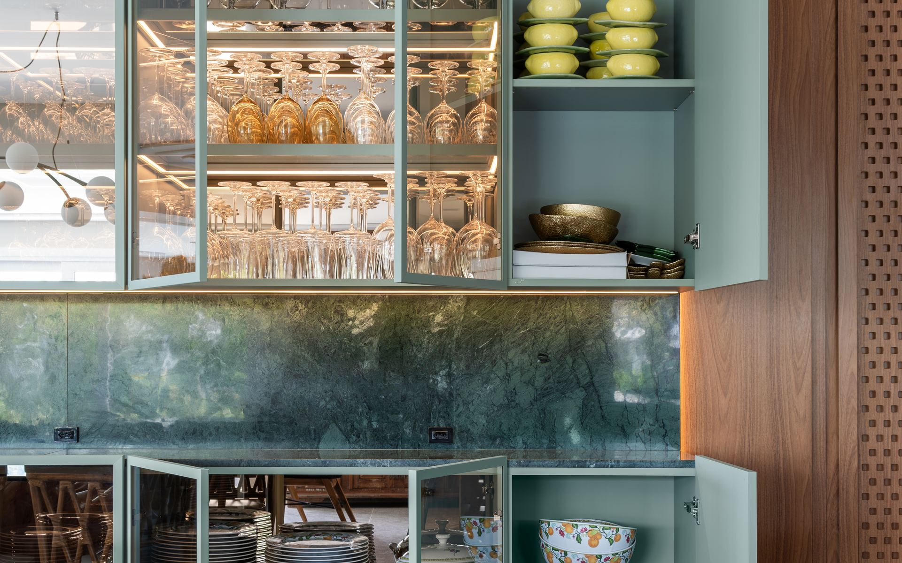
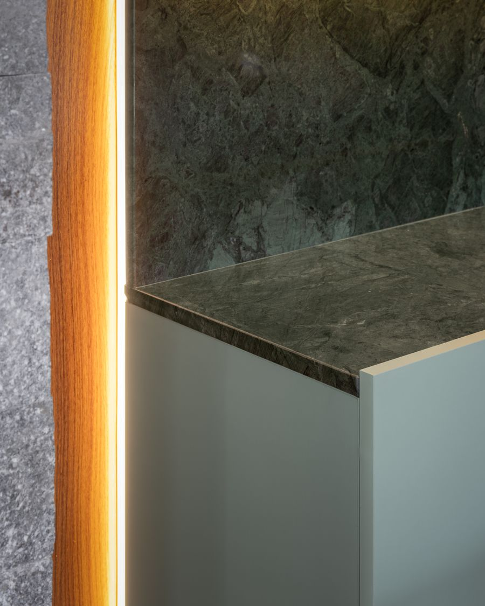

Mármores
Desenho nobre e movimento único. Ideal para lavatórios, painéis e ambientes de baixo impacto.

Capão da Canoa · Litoral Norte do RS
Rochas ornamentais para cozinhas, áreas gourmet, banheiros, escadas e revestimentos. Da leitura do projeto arquitetônico à instalação final, sem intermediário e sem promessa que não cabe no prazo.
Atendimento de segunda a sexta, 8h às 12h e 13h30 às 18h. Sábado das 8h às 13h.
O jeito MarmoMonte
Somos uma empresa familiar e uma equipe enxuta de propósito. Quem visita a sua obra é quem lê o projeto, confere a medida, acompanha o corte na fábrica e coloca a peça no lugar. É por isso que o detalhe combinado na visita chega igual na instalação.
Cada ambiente pede um material. Explicamos o que resiste, o que mancha, o que exige manutenção, e o que faz sentido para o seu uso e o seu orçamento.
Não trabalhamos com medida de planta sem checagem. A conferência em obra é o que evita recorte errado, emenda aparente e retrabalho.
Você recebe o material, o acabamento de borda, os recortes e a data de instalação discriminados. Sem enrolação e sem custo que aparece no fim.
Se precisar de um ajuste ou de uma orientação de limpeza depois de instalado, você fala com quem executou a obra.

Nossos materiais
Trabalhamos com granitos, mármores, quartzitos, dolomíticos, quartzos e superfícies ultracompactas. Se você já tem um material em mente, buscamos a chapa. Se ainda não tem, mostramos as opções que combinam com o projeto e com o uso real do ambiente.
Desenho nobre e movimento único. Ideal para lavatórios, painéis e ambientes de baixo impacto.

Resistência e baixa manutenção para cozinhas, churrasqueiras e áreas de uso intenso.

O visual do mármore com dureza de granito. A escolha de quem quer sofisticação sem abrir mão do uso.

Pedras retroiluminadas para painéis, adegas e bares. O detalhe que muda a leitura do ambiente.

Grandes formatos para bancadas contínuas, fachadas e revestimentos de alto desempenho.
Também trabalhamos com dolomíticos e quartzos industrializados. Se o seu arquiteto indicou ou detalhou um material específico, mande a referência que verificamos disponibilidade e preço de chapa.
Onde aplicamos
Fabricação sob medida, acabamento, transporte e instalação final. Tudo executado pela mesma equipe.
Bancadas, cubas esculpidas, frontões e ilhas gourmet com acabamento de borda definido junto com você.
Lavatórios em peça única, nichos, prateleiras e revestimento de box em pedra natural.
Churrasqueiras, balcões, cubas de apoio e painéis pensados para o uso ao ar livre no litoral.
Pisos, espelhos e rodapés escada com encaixe conferido degrau a degrau.
Tampos de mesa, aparadores e peças especiais em parceria com marcenarias e designers.
Acabamentos de portas, janelas e sacadas com o mesmo material das demais peças da obra.
Revestimentos e bases resistentes ao calor, com desenho contínuo entre as peças.
Revestimentos internos e externos em pedra natural e lâmina ultracompacta.
Painéis, nichos, lápides e projetos que exigem execução fora do padrão.
Como funciona
A ordem importa, porque cada etapa depende da anterior estar certa. É assim que o prazo combinado se cumpre.
Você manda o projeto ou descreve o ambiente. Já indicamos os materiais que fazem sentido e a faixa de investimento.
Seleção da chapa e do acabamento de borda, com orientação técnica sobre resistência, manutenção e desenho.
Conferência das medidas reais em obra, alinhamento com marcenaria e definição dos recortes.
Corte, acabamento e montagem das peças na fábrica, com o padrão do desenho respeitado entre elas.
Transporte, instalação final e orientação de limpeza e conservação. Suporte com quem executou a obra.
Obras executadas
Clique em qualquer foto para ampliar e dar zoom no acabamento.

Quem faz
A MarmoMonte nasceu em maio de 2022, fundada por Igor Francisco e sua esposa Raquel. Igor trabalha na construção civil desde muito cedo e teve o primeiro contato com rochas ornamentais em 2014. Se especializou no ofício e hoje conduz pessoalmente cada etapa do processo.
O nome vem dos montes, onde as rochas se formam e de onde sai a matéria-prima que transformamos em peça acabada.
Nosso trabalho é fazer você parar de enxergar a pedra como material de construção e passar a viver um ambiente sofisticado, funcional e feito para durar. Ao final da obra, queremos que você tenha orgulho do resultado e a certeza de um investimento que valoriza o imóvel.
Perguntas frequentes
Depende do material, do volume de metros lineares, do acabamento de borda e da quantidade de recortes. Por isso não trabalhamos com preço de tabela solto: fazemos a medição e enviamos o orçamento fechado, com material e serviço discriminados. O que estiver no orçamento é o que você paga.
Depois da medição definitiva no local e da aprovação do orçamento, a produção e a instalação costumam levar de 7 a 15 dias úteis. O prazo varia conforme a disponibilidade do material e o tamanho do projeto, e é informado por escrito antes de você fechar.
O granito é resistente e de baixa manutenção, indicado para áreas de uso intenso. O mármore tem desenho nobre, mas é mais sensível a ácidos e riscos. O quartzito une o visual do mármore à dureza do granito. O quartzo é industrializado, com padrão uniforme e alta resistência a manchas. Na visita indicamos o material certo para cada ambiente, considerando uso, manutenção e orçamento.
Capão da Canoa, Xangri-lá, Arroio do Sal, Osório, Imbé, Tramandaí e Torres, além da Serra Gaúcha e da região metropolitana de Porto Alegre. Se a sua obra fica perto dessas regiões, mande uma mensagem que confirmamos o atendimento.
Sim. Interpretamos o projeto executivo, conferimos as medidas em obra, damos orientação técnica na escolha do material e acompanhamos o cronograma até a instalação. Trabalhamos alinhados com marcenaria e demais fornecedores da obra.
Depende do material. Rochas mais porosas se beneficiam de impermeabilização, e algumas superfícies industrializadas dispensam. Explicamos o cuidado de cada material antes da compra e deixamos a orientação de limpeza na entrega.
Solicite seu orçamento
Responda os campos ao lado ou chame direto no WhatsApp. Quanto mais detalhe você der (ambiente, medidas aproximadas, material pretendido), mais rápido volta o orçamento.
contato@marmomonte.com.br
Segunda a sexta, 8h às 12h e 13h30 às 18h
Sábado, 8h às 13h
Capão da Canoa / RS, atendendo todo o Litoral Norte, Serra Gaúcha e Grande Porto Alegre